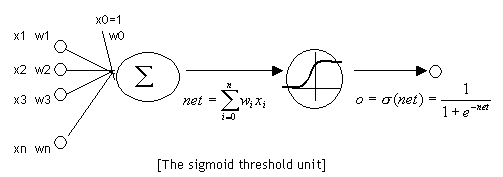

一、机器学习的函数介绍
1. softmax函数
函数形式
$$ S_i = \frac{e^{V_i}}{\sum\nolimits_{i}^{C}e^{V_i}} $$
其中， $ V_i $ 是分类器前级输出单元的输出。$ i $ 表示类别索引，总的类别个数为 $ C $ 。$ S_i $ 表示的是当前元素的指数与所有元素指数和的比值。Softmax 将多分类的输出数值转化为相对概率，更容易理解和比较。
实例
一个多分类问题，C = 4。线性分类器模型最后输出层包含了四个输出值，分别是：
$$ V = \begin{bmatrix} -3 \\ 2 \\ -1 \\ 0 \end{bmatrix} $$
经过Softmax处理后，数值转化为相对概率：
$$ S = \begin{bmatrix} 0.0057 \\ 0.8390 \\ 0.0418 \\ 0.1135 \end{bmatrix} $$
很明显，Softmax 的输出表征了不同类别之间的相对概率。我们可以清晰地看出，$ S_1 = 0.8390 $ ，对应的概率最大，则更清晰地可以判断预测为第2类的可能性更大。Softmax 将连续数值转化成相对概率，更有利于我们理解。
2. sigmoid函数
函数形式
$$ \sigma(x) = \frac{1}{1 + e^{-x}} $$
该函数的导数形式非常简单，为：
$$ \begin{aligned}
\sigma(x)’ & = (\frac{1}{1 + e^{-x}})’ \\
& = -\frac{-e^{-x}}{(1 + e^{-x})^2} \\
& = \frac{1}{1 + e^{-x}} - \frac{1}{(1 + e^{-x})^2} \\
& = \sigma(x)(1 - \sigma(x))
\end{aligned} $$
函数性质
函数图像

函数值域为 $ (0, 1) $ ，用于将神经元的输出归一化，便于做二分类问题。在机器学习领域，将输出的值从 $ (-\infty, +\infty) $ 归一化到 $ (0, 1) $ 中，对于许多分类问题都是很好的函数，比如逻辑回归。
二、传统机器学习算法
逻辑回归 Logistics Regression
函数形式和模型
$$ \hat{y} = sigmoid(W^T X) = \frac{1}{1 + e^{-W^T X}} $$
- 函数输出为0到1之间的一个数，对于二分类问题可以理解为预测值为1的概率
- 使用时需要选定一个阈值来决定二分类问题，一般取0.5
- 二元逻辑回归就是sigmoid神经元
损失函数
首先，对于一个样本 $ i $ 估计正确的概率为
$$ p_i = \hat{y_i}^{y_i} (1 - \hat{y_i})^{1 - y_i} = \left\{\begin{array}{cl}
\hat{y_i} & y_i = 1 \\
1 - \hat{y_i} & y_i = 0
\end{array}\right. $$
$ \hat{y_i} $ 为预测值， $ y_i $ 为实际值
对于一组样本，期望全部正确，使用最大似然估计——即将所有概率相乘得到概率
$$ p = \prod_{i} \hat{y_i}^{y_i} (1 - \hat{y_i})^{1 - y_i} $$
方便计算，将乘法转化成为加法，左右取log
$$ log(p) = \sum_{i} [y_i log (\hat{y_i}) + (1 - y_i) log (1 - \hat{y_i})] $$
期望这个数越大越好，但是一般计算取越小越好更方便，加上负号
$$ l = \sum_{i} [-y_i log (\hat{y_i}) - (1 - y_i) log (1 - \hat{y_i})] $$
即为逻辑回归损失函数
训练
使用梯度下降算法，求
$$ \begin{aligned}
\frac{\partial W^T X}{\partial w_i} & = \frac{\partial \sum_{i} w_i x_i}{\partial w_i} = x_i, \\
\frac{\partial l}{\partial w_i} & = \sum_{i} [-y_i \frac{\partial log (\hat{y_i})}{\partial w_i} - (1 - y_i) \frac{\partial log (1 - \hat{y_i})}{\partial w_i}] \\
& = \sum_{i} [-y_i \frac{\frac{-1}{(1 + e^{-W^T X})^2} \cdot (-x_i e^{-W^T X})}{\frac{1}{1 + e^{-W^T X}}} - (1 - y_i) \frac{- \frac{-1}{(1 + e^{-W^T X})^2} \cdot (-x_i e^{-W^T X})}{1 - \frac{1}{1 + e^{-W^T X}}}] \\
& = \sum_{i} [\frac{-y_i x_i e^{-W^T X}}{1 + e^{-W^T X}} + \frac{(1 - y_i) x_i}{1 + e^{-W^T X}}] \\
& = \sum_{i} (\frac{x_i}{1 + e^{-W^T X}} - y_i x_i) \\
& = \sum_{i} [(\hat{y_i} - y_i)x_i]
\end{aligned} $$
三、神经网络
1. 感知器（神经元）
- 神经网络的组成单元——神经元。
- 神经元也叫做感知器。
- 神经元和感知器的不同在于神经元的激活函数为 $ sigmoid $ 函数
模型

函数形式
- 输入权值 一个感知器可以接收多个输入 $ (x_1, x_2, …, x_n | x_i \in R) $，每个输入上有一个权值 $ w_i \in R $，此外还有一个偏置项 $ b \in R $ 。
- 激活函数 感知器的激活函数可以有很多选择，比如我们可以选择下面这个阶跃函数 $ f $ 来作为激活函数：
$$ f(z) = \left\{\begin{array}{ll}
1 & {z > 0} \\
0 & otherwise
\end{array}\right. $$ - 输出 感知器的输出用下面的公式计算
$$ y = f(w \cdot x + b) $$
训练神经元
感知器规则
$$ w_i \leftarrow w_i + \Delta w_i \\
b \leftarrow b + \Delta b $$
其中
$$ \Delta w_i = \eta(t - y)x_i \\
\Delta b = \eta(t - y) $$
- $ t $ 为训练样本的实际值，也就是label
- $ y $ 为感知器输出值
- $ \eta $ 为学习速率，也就是rate
实例
python编写感知器实现and运算符
Github: https://github.com/Githubwyb/zeroDeepLearning/tree/master/1.Perceptron
2. 线性单元
模型
函数
与感知器一致，仅仅将激活函数改为线性函数 $ f(x) = x $
训练线性单元
目标函数
线性单元所要达到的目标是预测结果和实际结果相同，可以定义单个样本误差为：
$$ e = \frac{1}{2}(y - \bar y)^2 = \frac{1}{2}(y - w \cdot x)^2 $$
其中 $ y $ 为实际值，$ \bar y $ 为预测值。线性单元的目标为使 $ e $ 达到最小。
实际情况中，样本有很多个，需要使一批样本的误差达到最小，定义整体误差 $ E $ ：
$$ \begin{aligned}
E & = e_1 + e_2 + … + e_n \\
& = \frac{1}{2}\sum_{i = 1}^{n}(y_i - \bar y_i)^2 \\
& = \frac{1}{2}\sum_{i = 1}^{n}(y_i - w_i \cdot x_i)^2
\end{aligned} $$
训练线性单元目的即为将 $ E $ 变为最小
梯度下降算法
为使整体误差下降到最小，需要改变 $ w $ 使预测值更接近于真实值。可以定义整体误差 $ E $ 为 $ w $ 的函数，利用梯度的方法使整体误差取极小值点。由于计算机没办法计算梯度，但是计算能力强大，可以使用尝试法接近极小值。引入渐进到极小值及梯度下降算法的公式，对每个 $ w $ 来说：
$$ w_{new} = w_{old} - \eta\nabla E(w_{old}) $$
对于 $ \nabla E $ ，有：
$$ \begin{aligned}
\nabla E(w) & = \frac{1}{2}\sum_{i = 1}^{n}\frac{\partial}{\partial w}(y_i - \bar{y_i})^2 \\
& = \frac{1}{2}\sum_{i = 1}^{n}\frac{\partial}{\partial w}(y_i - w \cdot x)^2 \\
& = \frac{1}{2}\sum_{i = 1}^{n}[- 2(y_i - w \cdot x)x] \\
& = -\sum_{i = 1}^{n}(y_i - \bar{y_i})x \\
\end{aligned} $$
所以，训练线性单元的规则为：
$$ w \leftarrow w + \eta\sum_{i = 1}^{n}(y_i - \bar{y_i})x $$
实例
python编写线性单元实现线性预测
Github: https://github.com/Githubwyb/zeroDeepLearning/tree/master/2.LinearUnit
3. 神经网络和反向传播算法
神经元
神经元就是将感知器的激活函数更改为 $ sigmoid $ 函数：
神经网络

神经网络包含输入层、隐藏层和输出层，隐藏层可以有多层神经元构成，每一层神经元的输入为上一层神经元的输出。
上图所示的隐藏层只有一层，公式为：
$$ a_4 = sigmoid(w_{41}x_1 + w_{42}x_2 + w_{43}x_3 + w_{44}x_4 + w_{4b}) \\
a_5 = sigmoid(w_{51}x_1 + w_{52}x_2 + w_{53}x_3 + w_{54}x_4 + w_{5b}) \\
a_6 = sigmoid(w_{61}x_1 + w_{62}x_2 + w_{63}x_3 + w_{64}x_4 + w_{6b}) \\
a_7 = sigmoid(w_{71}x_1 + w_{72}x_2 + w_{73}x_3 + w_{74}x_4 + w_{7b}) $$
输出层为和输出 $ y $ 同维度的神经元组成，公式同上。
神经网络的训练
现在，我们需要知道一个神经网络的每个连接上的权值是如何得到的。我们可以说神经网络是一个模型，那么这些权值就是模型的参数，也就是模型要学习的东西。然而，一个神经网络的连接方式、网络的层数、每层的节点数这些参数，则不是学习出来的，而是人为事先设置的。对于这些人为设置的参数，我们称之为**超参数(Hyper-Parameters)**。
反向传播算法
首先，对于整体神经网络来说，目标函数取输出层所有误差的平方和：
$$ E_d = \frac{1}{2}\sum_{j \in n_{outputs}}(t_j - y_j)^2 $$
$ E_d $ 仅代表对于一个样本d的误差，训练规则同上的线性单元的训练使用的梯度下降算法：
$$ w_{ji} = w_{ji} - \eta\frac{\partial E_d}{\partial w_{ji}} $$
计算 $ \frac{\partial E_d}{\partial w} $ 需要分输出层、隐藏层两种情况进行计算：
设一些变量的值
$$ \begin{aligned}
net & = w \cdot x \\
y & = sigmoid(net) \\
\delta_j & = -\frac{\partial E_d}{\partial net_j} \\
j & ，神经元输出第j维 \\
i & ，神经元输入第i维 \\
k & ，神经网络隐藏层第k层 \\
o & ，神经网络的输出层
\end{aligned} $$
输出层
由链式求导法则，
$$ \frac{\partial E_d}{\partial w_{ji}} = \frac{\partial E_d}{\partial y_j}\frac{\partial y_j}{\partial net_j}\frac{\partial net_j}{\partial w_{ji}} $$
其中，
$$ \begin{aligned}
\frac{\partial E_d}{\partial y_j} & = \frac{\partial \frac{1}{2}\sum_{j}(t_j - y_j)^2}{\partial y_j} = -(t_j - y_j) \\
\frac{\partial y_j}{\partial net_j} & = \frac{\partial sigmoid(net_j)}{\partial net_j} = y_j(1 - y_j) \\
\frac{\partial net_j}{\partial w_{ji}} & = \frac{\partial \sum_{i} w_{ji}x_{ji}}{\partial w_{ji}} = x_{ji} \\
\frac{\partial E_d}{\partial net_j} & = -(t_j - y_j)y_j(1 - y_j) = -\delta_j
\end{aligned} $$
代入得
$$ \frac{\partial E_d}{\partial w_{ji}} = \frac{\partial E_d}{\partial y_j}\frac{\partial y_j}{\partial net_j}\frac{\partial net_j}{\partial w_{ji}} = -(t_j - y_j)y_j(1 - y_j)x_{ji} = -\delta_j x_{ji} $$
所以输出层的 $ w_{ji} $ 训练规则为：
$$ w_{ji} \leftarrow w_{ji} - \eta\frac{\partial E_d}{\partial w_{ji}} = w_{ji} + \eta \delta_j x_{ji} $$
隐藏层
用递推公式，设隐藏层有 $ n $ 层
第 $ n $ 层隐藏层
$$ \frac{\partial E_d}{\partial w_{j_ni}} = \frac{\partial E_d}{\partial net_{j_n}}\frac{\partial net_{j_n}}{\partial w_{j_ni}} $$
$ E_d $ 不是 $ net_{j_n} $ 直接函数，但输出层的 $ net_{j_o} $ 是 $ net_{j_n} $ 的函数，且有
$$ \frac{\partial E_d}{\partial net_{j_n}} = \sum_{j_o}\frac{\partial E_d}{\partial net_{j_o}}\frac{\partial net_{j_o}}{\partial net_{j_n}} = \sum_{j_o}-\delta_{j_o}\frac{\partial net_{j_o}}{\partial net_{j_n}} $$
设 $ y_{j_n} $ 为隐藏层第 $ j_n $ 个神经元的输出，同时也是输出层所有神经元的第 $ j_n $ 输入 $ x_{j_n} $，
$$ \begin{aligned}
\frac{\partial net_{j_o}}{\partial net_{j_n}} & = \frac{\partial net_{j_o}}{\partial y_{j_n}}\frac{\partial y_{j_n}}{\partial net_{j_n}} \\
\frac{\partial net_{j_o}}{\partial y_{j_n}} & = \frac{\partial \sum_{i} w_{j_oi}x_{j_oi}}{\partial y_{j_n}} = w_{j_oj_n} \\
\frac{\partial y_{j_n}}{\partial net_{j_n}} & = \frac{\partial sigmoid(net_{j_n})}{\partial net_{j_n}} = y_{j_n}(1 - y_{j_n})
\end{aligned} $$
代入得
$$ \begin{aligned}
\frac{\partial E_d}{\partial net_{j_n}} & = \sum_{j_o}\frac{\partial E_d}{\partial net_{j_o}}\frac{\partial net_{j_o}}{\partial net_{j_n}} \\
& = \sum_{j_o} -\delta_{j_o} w_{j_oj_n} y_{j_n} (1 - y_{j_n}) \\
& = y_{j_n} (1 - y_{j_n}) \sum_{j_o} -\delta_{j_o} w_{j_oj_n} \\
& = -\delta_{j_n}
\end{aligned} $$
递推到第 $ n - k $ 层
$$ \frac{\partial E_d}{\partial w_{j_{n-k}i}} = \frac{\partial E_d}{\partial net_{j_{n-k}}}\frac{\partial net_{j_{n-k}}}{\partial w_{j_{n-k}i}} = -\delta_{j_{n - k}}x_{j_{n - k}i} $$
其中
$$ \delta_{j_{n - k}} = y_{j_{n - k}} (1 - y_{j_{n - k}}) \sum_{j_{n - k + 1}} \delta_{j_{n - k + 1}} w_{j_{n - k + 1}j_{n - k}} $$